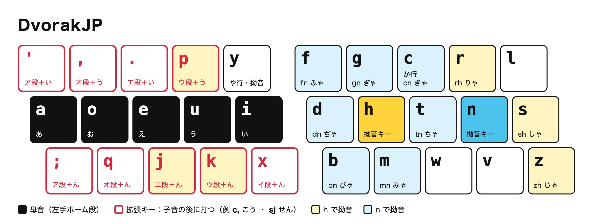

DvorakJP lite とは
DvorakJP 拡張ローマ字入力のうち、QWERTY ローマ字入力と競合しないものだけを集めたローマ字テーブルです。

設計思想
1. QWERTY と共存する
オリジナルの DvorakJP 拡張ルールの一部は、QWERTY ローマ字の「ん」の打ち方と衝突します。
| 打鍵 | QWERTY ローマ字 | 元祖 DvorakJP |
|---|---|---|
un. | うん。 | うねい |
enpou | えんぽう | えぬうおう |
konbanha | こんばんは | こんばにゃ |
DvorakJP lite では、衝突する拡張ルールを次の方針で扱い、QWERTY ローマ字の打ち方を一切変えません。
- 効果の大きいものは、QWERTY ローマ字で打たない組み合わせを最小限使って採用する。 例:
- な行の拡張は
nの代わりに、Dvorak 配列でnの真下にあるvで打つ（vjねん、v,のう） - ぴゃ行は、Dvorak 配列で
pとyが同じ手で打ちにくいので、h による拗音のうちphだけを採用する（phaぴゃ、ph,ぴょう）
- な行の拡張は
- 効果が限定的なものは採用しない。 例:
- ぴゃ行以外の
h,n拗音拡張は採用しない。主要な拗音は、QWERTY 同様「子音（右手）、y＋母音（左手）」で打つ。
- ぴゃ行以外の
2. 記号キーの自由度を担保する
「ア段＋い」は ' と - のどちらでも打てます（k' / k-→かい）。Dvorak 配列の上段左の記号キーは、好みで ' と - のどちらにしていても使えます。
拡張キー
| キー | 意味 | 直音の例 | な行の例 | 拗音の例（きゃ行・ぴゃ行） |
|---|---|---|---|---|
' - | ア段＋い | s' s- さい | v' v- ない | cy' cy- きゃい、ph' ph- ぴゃい |
; | ア段＋ん | s; さん | v; なん | cy; きゃん、ph; ぴゃん |
. | エ段＋い | s. せい | v. ねい | cy. きぇい、ph. ぴぇい |
, | オ段＋う | s, そう | v, のう | cy, きょう、ph, ぴょう |
p | ウ段＋う | sp すう | vp ぬう | cyp きゅう、php ぴゅう |
k | ウ段＋ん | sk すん | vk ぬん | cyk きゅん、phk ぴゅん |
j | エ段＋ん | sj せん | vj ねん | cyj きぇん、phj ぴぇん |
q | オ段＋ん | sq そん | vq のん | cyq きょん、phq ぴょん |
x | イ段＋ん | sx しん | vx にん | cyx きぃん、phx ぴぃん |
詳しい仕様は GitHub の README を見てください。
導入方法
1Google日本語入力のローマ字テーブルを更新する
- メニューバーの入力メニューから、Google日本語入力の「環境設定…」を開きます。
- 「一般」タブの「ローマ字テーブル」で「編集…」を押します。
- 左下の「編集」→「インポート…」で、ダウンロードした
romantable_dvorakjplite.txtを選びます。 - 「OK」→「適用」で保存します。
2Dvorak 配列を追加する
- 「システム設定」→「キーボード」→「入力ソース」の「編集…」を開きます。
- 「＋」を押し、「英語」から「Dvorak」を追加します。
- Google日本語入力でかな入力をしたときも Dvorak 配列で打てるか確かめてください。
準備中
Windows での導入方法が確立できたら公開します。
Linux 版の Google日本語入力はないので、オープンソース版の Mozc（fcitx5-mozc など）を使います。ローマ字テーブルの形式は同じです。
1Mozc のローマ字テーブルを更新する
- Mozc の設定ツールを開きます。
ディストリビューションによっては/usr/lib/mozc/mozc_tool --mode=config_dialog/usr/libexec/mozc/mozc_toolにあります。 - 「一般」タブの「ローマ字テーブル」で「編集…」を押します。
- 左下の「編集」→「インポート…」で、ダウンロードした
romantable_dvorakjplite.txtを選びます。 - 「OK」→「適用」で保存します。
2Dvorak 配列を追加する（fcitx5 の場合）
fcitx5-configtoolを開きます。- 入力メソッドのグループで、キーボードレイアウトを「English (Dvorak)」にします。
- 同じグループに「Mozc」を追加します。Mozc はグループのレイアウトに従うので、かな入力も Dvorak 配列になります。
練習
ローマ字ベースの長文タイピング練習です。日本語入力をオフにして、英字の直接入力で打ってください。 下段の赤字の部分は、拡張入力で打鍵を減らせます（マウスを乗せると打ち方が出ます）。 かなに確定する前の入力中のキーは、Backspace で消して打ち直せます。
読み込み中…
DvorakJP とは
Dvorak 配列で日本語を打ちやすくするために、ローマ字入力を拡張したローマ字テーブルです。キーの物理配置は Dvorak 配列のまま、打鍵の数と左右の手の偏りを減らします。

設計思想
1. 母音は左手、子音は右手で打つ
Dvorak 配列は左手のホーム段に母音（a o e u i）が並び、子音の多くは右手にあります。ローマ字の「子音＋母音」が左右交互の打鍵になり、日本語でも打ちやすい配列です。
2. 左手に残った子音を右手で打てるようにする
ただし、か行の k と拗音の y は左手にあり、左右交互が崩れます。DvorakJP では右手のキーで代わりに打てるようにします。
- か行は
cでも打てる。 例:caか、ciき、coこ - 拗音は
yの代わりにhかnで打てる。 例:rhaりゃ、cnaきゃ
3. よく出る母音の組み合わせと「ん」を1打にする
「こう」「かい」「せん」のような二重母音や撥音（ん）は、日本語にとても多く出てきます。左手の母音のまわりにある、ローマ字では使わないキー（' , . p ; q j k x）に割り当て、子音の後に1打で打てるようにします。例: c,c' こうかい（公開）、t,cn, とうきょう（東京）
拡張キー
| キー | 意味 | 直音の例 | な行の例 | 拗音の例 |
|---|---|---|---|---|
' | ア段＋い | s' さい | n' ない | rh' りゃい |
; | ア段＋ん | s; さん | n; なん | cn; きゃん |
. | エ段＋い | s. せい | n. ねい | hn. ひぇい |
, | オ段＋う | s, そう | n, のう | rh, りょう |
p | ウ段＋う | sp すう | np ぬう | rhp りゅう |
k | ウ段＋ん | sk すん | nk ぬん | cnk きゅん |
j | エ段＋ん | sj せん | nj ねん | mnj みぇん |
q | オ段＋ん | sq そん | nq のん | rhq りょん |
x | イ段＋ん | sx しん | nx にん | bnx びぃん |
拗音に h と n のどちらを使うかは、子音で決まります（y もそのまま使えます）。
| 拗音キー | 子音と例 |
|---|---|
h | kha きゃ、sha しゃ、jha じゃ、nha にゃ、rha りゃ、pha ぴゃ、tha てゃ、dha でゃ |
n | cna きゃ、gna ぎゃ、tna ちゃ、dna ぢゃ、hna ひゃ、bna びゃ、mna みゃ |
参考資料
- 本家サイト:
http://www7.plala.or.jp/dvorakjp/index.htm
2021 年ごろに閉鎖され、現在は見られません。 - AI全盛期の今だからこそ、改めてオススメしたいDvorak, DvorakJP配列（Zenn, shinespark氏）
- dvorakjp-roman-table（DvorakJP Prime）（GitHub, shinespark氏）